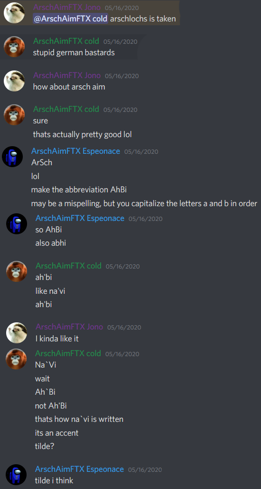

Arsch Aim is NA's leading CS:GO silver clan, consisting of the following list of rotating members:
- Abdeet
- EspeonAce
- Jono
- NameRedacted
- Quantum
- Nathanbear (aka tridgway65)
- Deetstroyer
- JuuCii
- Kevwild
- DarthTomato
History
Arsch Aim was created on May 16th, 2020 by Abdeet, Jono, and EspeonAce. The name Arsch Aim was first suggested by Jono, and the clan tag Ah`Bi can be attributed to EspeonAce. Soon after, NameRedacted and Kevwild joined the clan, with the rest of the members joining in the weeks and months that followed.
Player Bios
Abdeet: Abdeet is Arsch Aim's primary awper, and entries and even IGLs depending on how well he is playing. He is known for having some pretty sick AWP clips while not being able to hold an angle for over five seconds.
EspeonAce: EspeonAce has gone by many names during his illustrious career including Frisbee, Salad Koala and Funny Deer Team #1 Fan. No matter what he's been called, as Arsch Aim's support he's always known every smoke and flash lineup on every map in the active duty pool, and some that aren't, like de_abdeet and de_rubble.
Jono: Jono is Arsch Aim's hard carry. There's not much else to say. He gets around 40 kills every game without breaking a sweat. Jono is probably the only thing keeping us competitive.
NameRedacted: NameRedacted has played many roles on Arsch Aim, but the one that sticks out is as site anchor. Be it Inferno B site or anywhere on de_abdeet, NameRedacted can be guaranteed to get kills, even when he's alone. He also picks up the AWP and some people (not Abdeet) say he's better than Abdeet with it.
Quantum: Quantum is the team's primary entry and rifler along with Jono. His mechanical skill combined with years of cognitive behavioral therapy to become a killing machine make him a dangerous opponent to play against. He even IGLs at times.
Nathanbear: Nathanbear (aka tridgway65) is Arsch Aim's official chef. Known for butchering dozens of chickens in one game of MM, he knows the location of every kitchen in a ten mile radius at all times.
Deetstroyer: Deetstroyer prefers the AUG and SG in any situation and wields them with prowess. Her gamesense is unparalleled and spray usage on point.
JuuCii: JuuCii doesn't always play for Arsch Aim, but when he does, he pops off. Currently working in Afghanistan, we all wish him the best.
Kevwild: Kevwild was one of the first members of Arsch Aim, back in the summer of 2020. His playstyle can be directly compared to Deetstroyer, with a notable exception being that he spends a lot of time during round watching TikTok videos loud enough that we can enjoy them too.
DarthTomato: DarthTomato is one of the newest members of Arsch Aim, only joining in late 2021. However, his mark on the team is indelible, and he has brought an outsider view to many of the decisions the clan has made, particularly in the realm of music. In game he can be spotted rocking the Deagle or Galil instead of an actual gun.